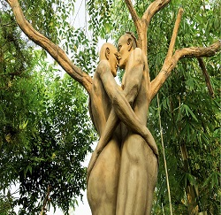

Kumarakom is a village on Vembanad Lake in the backwaters of Kerala, southern India. It’s laced with canals, where houseboats ply the waters. Kumarakom Bird Sanctuary is home to many species including cuckoos and Siberian storks. Nearby, the Bay Island Driftwood Museum displays wooden sculptures. In the lake, Pathiramanal Island is a haven for rare migratory birds. Ancient Thazhathangady Mosque is east of Kumarakom.
Read moreRural Kottayam is throbbing with the colour pink. With monsoon receding, a pink wave of water lilies has made its way up the backwater villages of Kottayam, attracting tourists in huge numbers.
Read moreMango meadows is the world’s 1st Agricultural theme park spread across 30 acres of land with more than 4500 species of plants and trees. It is one of the most bio diverse pieces of land on the planet. In addition to this the park houses 50 cottages of which 12 have been fully completed. The cottages and accommodations erected within the park are carefully placed without disturbing the soft fabric of the environment.
Read more